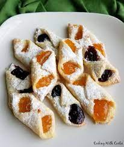

Kolacky

Another food i've never tasted but regardless makes me salivate
What can i say about a food i've never had
NOTHING lol so good luck trying this out
Ingredients
- 5 eggs
- pint sour cream
- teaspoon white sugar
- cups of butter
- baking powder
- all-purpose flour
Steps
- Preheat oven to 350 degrees F (175 degrees C). Line baking sheets with parchment paper
- Combine the flour, baking powder, butter or margarine, sugar, sour cream and eggs. Knead until dough is smooth
- Sprinkle a work surface generously with confectioners' sugar.
Roll dough out over the confectioners' sugar to 1/4 inch thick, adding more as needed.
Cut out into 3 inch squares and fill with nut,
poppyseed or prune filling
- Bake at 350 degrees F (175 degrees C) for 15 minutes. Enjoy!